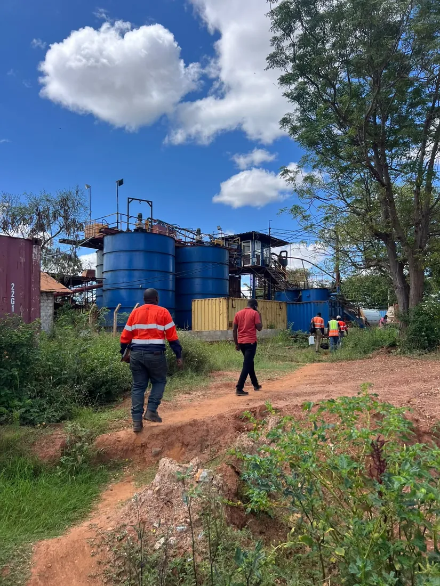
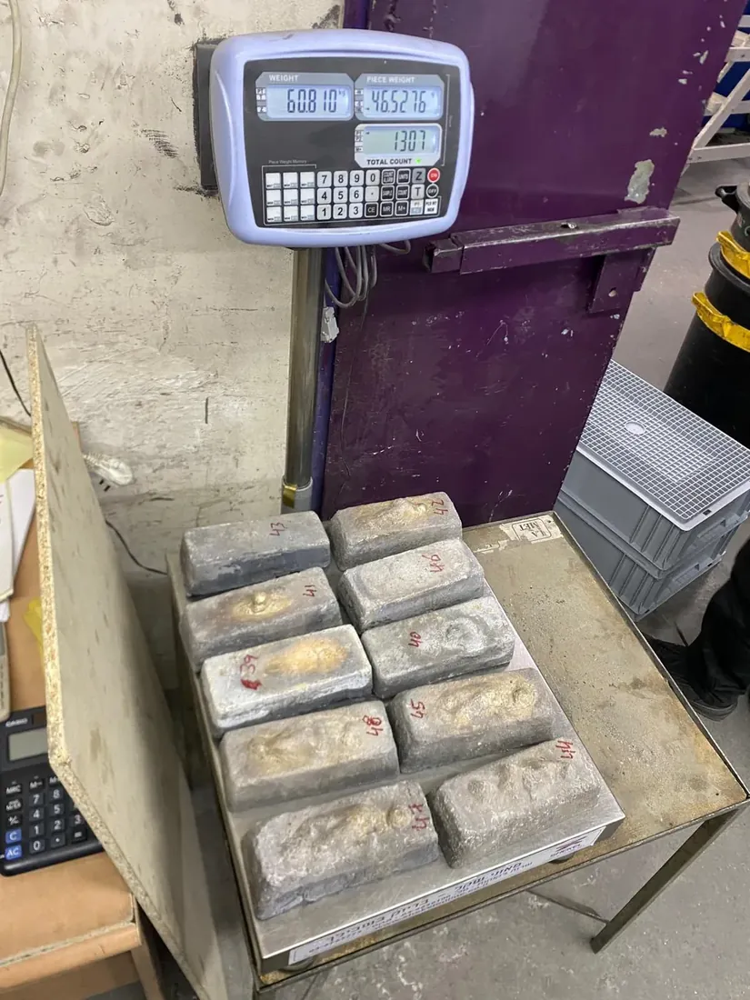
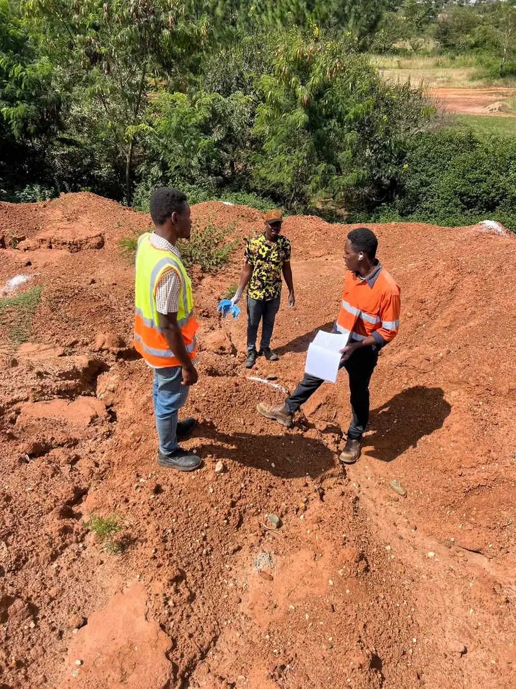

Shaul Akav
Fondateur et propriétaireVision, capital et croissance
Des milliards de tonnes de matériaux déjà extraits attendent dans des terrils et des bassins. Nous en récupérons des métaux de valeur grâce à une technologie verte, et nous développons des mines, dans 18 pays sur quatre continents.
El Yad Harutzim est une société israélienne basée à Ashdod. Nous prenons un actif physique complexe, une mine, un terril ou une cargaison de métal, et nous en tirons toute la valeur, de bout en bout.

Un actif minier en exploitation à Nyarugusu, en Tanzanie. Le minerai est concassé, broyé dans un broyeur à boulets puis séparé dans une usine CIP.

Une technologie verte qui sépare et récupère les métaux des résidus et matériaux miniers. Elle fonctionne à température et pression ambiantes, sans cyanure ni solvants organiques, et transforme les résidus miniers en ressource à valeur économique.

Achats directs auprès de producteurs en Ouganda, en Zambie et en Tanzanie. Chaque lingot est pesé et documenté, puis acheminé par une logistique contrôlée jusqu'à la raffinerie.
Fourchette dans la littérature : 7 à 14 milliards de tonnes par an. Sources : Global Tailings Review ; Nature Reviews Earth & Environment (2024).
Photos et vidéos des sites où nous travaillons. Nous nous y rendons nous-mêmes, avant chaque opération et tout au long de celle-ci.





Nous visitons le site, vérifions les infrastructures et rencontrons les équipes locales.
Des échantillons de sol, de minerai et de matériaux extraits sont prélevés et documentés.
Concassage, broyage et séparation, ou récupération verte à partir de matériaux déjà extraits.
Pesée, documentation et logistique contrôlée jusqu'à la raffinerie.
Sociétés enregistrées uniquement. Parlez-nous du projet, du matériau ou du métal que vous recherchez, et nous reviendrons vers vous avec les détails et les conditions.